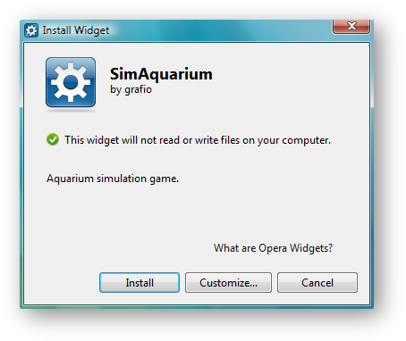
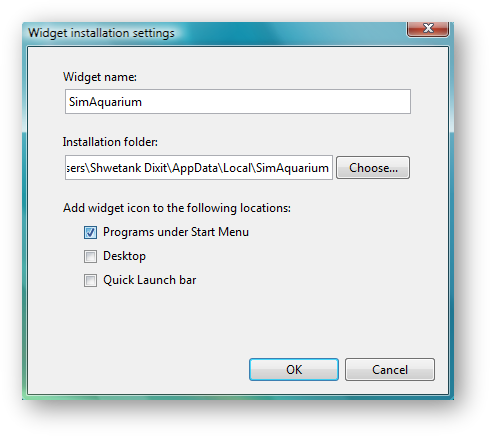
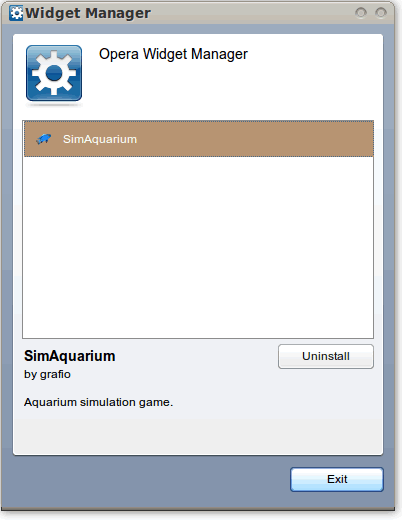
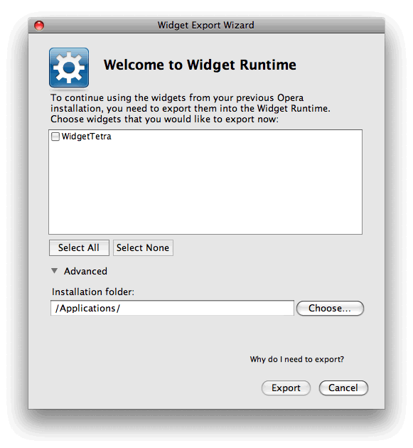
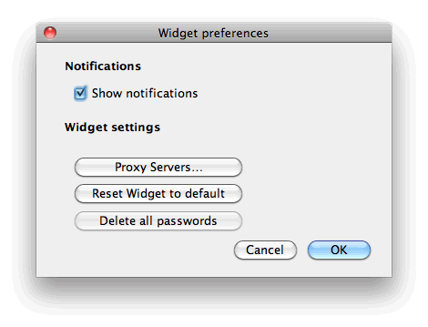
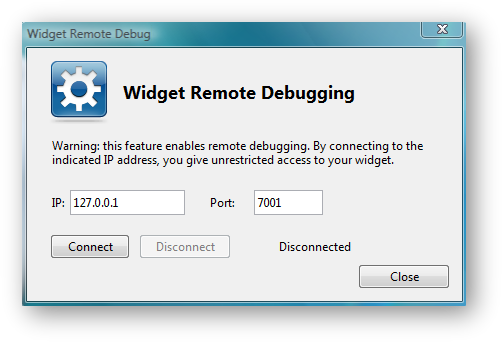
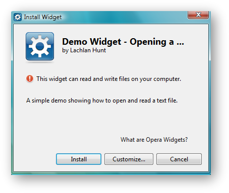
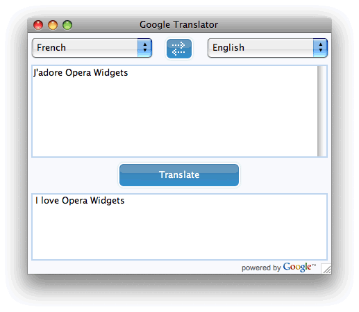
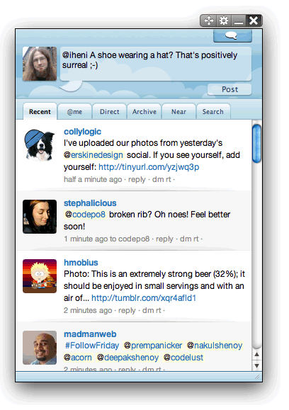

The Opera Widgets runtime for Desktop
24th April 2012: Please note
Starting with Opera 12, Opera Widgets will be turned off for new users and completely removed in a later release. If you're interested in building addons for Opera, we recommend going with our extensions platform — check out our extensions documentation to get started.
Table of contents:
- Introduction
- Download process
- Installation/uninstallation process
- Running Opera Widgets
- Export wizard
- Managing passwords
- Debugging
- Widget File I/O
- Notification system
- Context menu
- Widgets in application mode
- Widget control buttons
Introduction
Opera Widgets are made using Web standards, the same technology used to build Web pages. This ensures that they work on all platforms and operating systems, as well as providing developers with a much shorter and simpler development cycle for creating desktop applications.
Ever since Opera Widgets became part of Opera’s desktop browser in 2006 they have been dependent on the browser in many respects. Opera Widgets are managed from within the browser and they run as long as the browser runs.
Opera Widgets for desktop — found in Opera 10.20 alpha and higher — breaks this dependency between widgets and the browser. In short, as long as you have Opera installed somewhere on your machine, you can run any widget you like, without ever opening the browser.
This release gives you a preview of the changes that Opera has planned for widgets. Opera Widgets are getting a complete make-over — from being small, single-purpose gadgets to standalone applications with the power to replace native applications. In this article, we take a closer look at the main changes and new features included in Opera Widgets for desktop.
Download process
A new, better approach has been introduced for downloading widgets via Opera. This mechanism takes advantage of Opera’s download manager to give you more flexibility while your favorite widgets are being downloaded. You can use this time to look for some other widgets or simply surf the Web, and as soon as the widget download completes Opera will automatically trigger the widget installer.
From now on, you can also download widgets via different browsers and Opera’s widget runtime will take care of the installation. The widget runtime is registered in the system as one of the .wgt filetype application handlers, so it will be listed among the applications capable of handling widget files.
Installation/uninstallation process
The installation and uninstallation processes have changed a lot with Opera’s new widget runtime. Widget management has been moved out of the Opera browser and into the operating system itself. Widgets now integrate better with the platform via shortcuts and launch scripts (depending on the host platform), and are listed together with other applications belonging to the OS. The widget runtime is equipped with a graphical widget installer that facilitates the widget deployment process.
Widget installation can be triggered in several ways:
- Download the widget via Opera (or another browser) — the widget installer will run automatically after download
- Double click on a
.wgtfile in your file system - Drag and drop a
.wgtfile onto Opera - From the system console — for example in Windows you could enter
opera.exe -widget [widget path]\[widget name].wgt
The following sections describe the installation process for the various desktop platforms.
Once you have installed the latest version of Opera, try installing some sample widgets so you can have a play around. We’d recommend our Google Translator widget.
Windows
On Windows, a graphical widget installer guides you through the installation process. The default settings should be fine in most cases. You can click the Install button to perform the installation, as seen in Figure 1.

Figure 1: The Widget installation dialog box for Windows.
You can also customize your installation by clicking the Customize… button (seen in Figure 1). This brings up the Widget installation settings dialog seen in Figure 2.

Figure 2: The Widget installation settings dialog box for Windows.
In this dialog you can customize the following items:
Widget name: What the application is calledInstallation folder: Where it is installed on your systemAdd widget icon to: Check/uncheck the boxes to choose whether you want shortcuts for the widget added to yourStart Menu,DesktopandQuick Launchbar
When you press Install, the widget installer will extract the content and create shortcuts as specified.
A widget can be uninstalled in the same way as any other application:
Control Panel > Add/Remove Programson Windows XP and previousControl Panel > Programs > Uninstall Programson Windows Vista and later
Uninstalling a widget does not remove its settings, so if you decide to reinstall the same widget, your settings will be reused.
Linux
Figure 3 shows the installation dialog box for Opera Widgets in Linux. The default installation on Linux is for the current user only, but you can also choose to create a package for other users to install the widget as well. You can also choose to create a widget launcher script.

Figure 3: The Widget installation dialog box for Linux.
When you choose the Make xxx package from this Widget option, the system will actually generate a platform-specific package for the widget (eg .deb for Debian/Ubuntu), which is installed in the same way as any other package. After installation of the package, all management of the widget is done by your system’s package manager. Three package types are supported: .deb, .rpm and .tar.
After installation is complete, your widgets are accessible through the Applications menu, for example they are installed in Applications > Other in Ubuntu. Advanced users can run widgets from the terminal using the launcher scripts created during the install process. Also available in the Applications menu (under Accessories) is the Widget Manager, as seen in Figure 4. This is worth knowing about when you want to uninstall Opera Widgets — simply click the Opera Widget you want to uninstall, and click Uninstall.

Figure 4: The Widget Manager dialog box for Linux.
Mac
The graphical widget installer on Mac has the same look and feel as the one used on Windows, while respecting the platform differences regarding installation settings — see Figure 5. A default installation will create the widget bundle in the Applications folder.

Figure 5: The Widget installation dialog box for Mac.
You can customize your installation settings by clicking the Customize… button, which brings up the Widget installation settings dialog — see Figure 6.

Figure 6: The Widget installation settings dialog box for Mac.
This dialog makes it possible to customize the widget name and the installation location.
Widgets can be uninstalled in the same way as any other applications on Mac, by dragging and dropping the widget bundle into the Trash.
Running Opera Widgets
There are several ways to start a widget once it has been installed on your operating system:
Windows
- Click/Double-click the widget shortcut, or select it from your Quick Bar or Start Menu
- Run [widget name].exe from the widget installation folder
- In the system console, type
opera.exe -widget [widget installation folder]\config.xml
Linux
- Select the widget shortcut in the Applications menu.
- In the system terminal, type
opera -widget [widget installation directory path]\config.xml(if opera installed globally). - Go to
~/binand run the widget launcher script in the terminal
Mac
- Double-click the widget bundle in the installation folder (ie
/Applications/) - Type the name of the widget in Spotlight and choose the correct hint
For widgets to run, Opera’s desktop browser must be installed on the OS, but you can download widgets using other browsers and have them install just fine.
Export wizard
To keep on using the widgets you already have installed in versions of Opera previous to the change, you need to first export them into the new Widget Runtime. Fortunately, Opera provides an easy way to do this — when you upgrade Opera you will be greeted by the Widget Export Wizard, as seen in Figure 7.

Figure 7: The Widget Export Wizard dialog box.
You can import your widgets later via the menu option File > Import and Export > Export Widgets…
Managing passwords
When you log in to any widget that requires user credentials, your user name and password are saved so you can automatically log in next time you run the widget. If you don’t want your credentials to be stored, you can always delete all saved passwords via the context menu item Preferences… (see Figure 8). You can also select this option from the Widget’s Preferences… menu bar option.

Figure 8: The widget context menu.
This opens up the Widget preferences dialog, seen in Figure 9.

Figure 9: The widget preferences dialog box.
Here you can:
- Choose to enable or disable notifications
- Set proxy servers to run your widget through
- Reset all settings for the current widget to their defaults
- Delete all stored passwords
Debugging
To debug your widget remotely you have to take the following steps:
- Start Opera and go to Tools > Advanced > Developer Tools to start Opera Dragonfly
- Go to
Settings tab > Remote Debugsection - Check the
Remote Debugcheck box and adjust the port number if needed - Click the
Applybutton on the right hand side of the section - Start the widget you want to debug and open the remote debugging configuration dialog from the context menu (
Developer Tools) - Enable remote debugging (see Figure 10) and specify the IP address of the device you are debugging and the port on which Opera Dragonfly is listening (for widgets running on your machine, the default IP address for the localhost will be 127.0.0.1); press the
OKbutton - When the connection is complete you will be informed via a notification in the bottom right corner of the screen

Figure 10: The remote debugging dialog box.
Widget File I/O
The File I/O API provides developers with the functionality to access data on your file system from widgets, allowing for hybrid Web/desktop capabilities. This feature is even more powerful now that widgets can run as standalone applications.
When a widget is installed, you will be notified if the widget has access to your file system — see Figure 11.

Figure 11: The widget File I/O dialog box.
Notification system
Opera’s widget runtime supports a basic notification mechanism. Notifications appear in the bottom right corner of the screen when the widget calls the ShowNotification() function – see Figure 12 for an example. The notification window consists of:
- Widget name
- Widget icon
- Text of the notification

Figure 12: A sample widget notification.
Context menu
The widget context menu (take another look at Figure 8) has been expanded with new items to provide even better access to the most important options related to the widget:
Viewoptions:Always On Top,Normal,Always Below,ZoomPreferences: Opens theWidget preferencesdialog box (see Figure 9)Developer tools: Opens theWidget Remote Debugdialog box (see Figure 10)Download more widgets: this lets you download additional widgets from http://widgets.opera.com
Widgets in application mode
Opera’s widget runtime introduces support for an additional mode called application mode. In this mode widgets run in an OS-native window, as seen in Figure 13.

Figure 13: An example of application Mode on a widget.
This mode can be triggered by setting the defaultmode attribute in the config.xml’s widget element to application, as seen in the following example:
<?xml version='1.0' encoding='UTF-8'?>
<widget defaultmode="application">
<widgetname>Sample widget</widgetname>
<description>Shows the default chrome for application mode.</description>
</widget>This provides the widget with standard OS windows controls — such as minimize, maximize and close buttons — automatically.
Widget control buttons
Widget control buttons are another new feature made available in this release. They ensure that a consistent set of basic controls — Move, context menu, Minimize and Close — are available in all widgets in “Widget” mode. See the top-right of Figure 14 for an idea of what they look like.

Figure 14: Widget control buttons — Move, context menu, Minimize and Close respectively.
This provides a consistent user experience that fits in with the style of the platform the widget is running on — previously the onus was on the developer to provide such controls and follow the Opera Widgets Style Guide (deprecated). These buttons only appear when the user positions the mouse over the widget.
See the article on widget control buttons.
a href=This article is licensed under a Creative Commons Attribution-Noncommercial-Share Alike 3.0 Unported license.
Comments
The forum archive of this article is still available on My Opera.
-

My important errors and problems now is that my opera mini all version trust or untrust don't able connection to intrenet next time that installed on my phone sonyericsson ELM by line Mtnirancell provider... My operamini tell me: unabled to connect or operator lock mohtava.
-

Launch my services security sys soft unit cross multiple browser synchronization bookmark and my data base dynamic server hosting super computers opera dev doc dir certificate authentication collection full civil cad cat core care landing mobile pc computer membership it professional sys safety sorucer validater online traffic tracker seo analysis
-

Rotate opera mini google launch
No new comments accepted.Mohamadreza Rezaei
Saturday, April 28, 2012
I get proxy on my opera and put my net application for access my irancell proxy but that don't work. Now need for continue my networking persian gate way civil engineering to download and safety installed my opera mini trust and thawte consultion for sync my all results researcherenginebestsweb but need to support
Mohamadreza Rezaei
Saturday, April 28, 2012
Mohamadreza Rezaei
Saturday, April 28, 2012